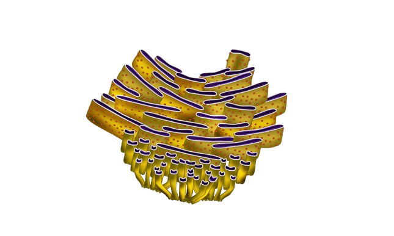

INTRODUÇÃO
Todo ser vivo (animal ou vegetal) é constituído de células. As células animais são células eucariontes (o que significa que possuem um núcleo definido e várias organelas membranosas) as quais são encontradas nos animais.
ORGANELAS
As células eucariontes animais possuem várias organelas, cada uma com funções específicas. Elas são essenciais para o funcionamento da célula e formam um sistema complexo de vida:
Lista de Organelas da celula animal:
NÚCLEO
O núcleo é como o cérebro da célula. É a região da célula onde se encontra o material genético (DNA) dos organismos eucariontes, tanto unicelulares como pluricelulares. Em geral, o núcleo controla todas as atividades celulares que ocorrem. Cada região do DNA é composta por genes que codificam as informações para a síntese de proteínas, que ocorre nos ribossomos. A depender do gene codificado, será sintetizada um tipo de proteína, que será usada para fins específicos.
MEMBRANA PLASMÁTICA
A membrana plasmática é uma estrutura celular fina que delimita a célula, sendo responsável pela saída e entrada de sustâncias. Assim, ela tem a função de proteger as estruturas celulares internas. É uma estrutura semipermeável, ou seja, é seletivo sobre as substâncias que entram e saem. Responsável pelo transporte e seleção de substâncias que entram e saem da célula. Por isso, ela é de extrema importância para o metabolismo celular.

CITOPLASMA
O citoplasma é todo o conteúdo celular localizado fora do núcleo. Nele está contida uma variada quantidade de organelas membranosas, as quais desenvolvem variadas funções. A parte do citoplasma localizada entre as organelas recebe o nome de citosol ou matriz citoplasmática, no qual as importantes reações químicas acontecem.

RIBOSSOMOS
A função dos ribossomos é auxiliar na produção e na síntese das proteínas nas células. Além dele, participam desse processo as moléculas de DNA e RNA. Os ribossomos reúnem diversos aminoácidos durante a síntese proteica através de uma ligação química chamada de ligação peptídica. Eles estão presentes em grande parte no citoplasma (ribossomos livres). No entanto, podem ser encontrados nas mitocôndrias, nos cloroplastos e no retículo endoplasmático.

RETICULO ENDOPLASMÁTICO LISO
O Retículo endoplasmático liso não possui ribossomos ligados à membrana, por este motivo recebe o nome de liso ou agranular. A sua função é, basicamente, participar da produção lipídios (gordura), especialmente os fosfolipídios, que compõem a membrana plasmática. No entanto, dependendo do tipo do celular, o REL terá funções diferentes. Como, por exemplo, produzir hormônios esteroides, a partir do colesterol, ou regular os níveis de cálcio do citoplasma de células do tecido muscular estriado.
RETICULO ENDOPLASMÁTICO RUGOSO
Está localizado no citoplasma, próximo ao núcleo, sendo a sua membrana uma continuação da membrana nuclear externa. Contém ribossomos na sua estrutura. A conexão do Reticulo Endoplasmático Rugoso com o núcleo da célula faz com que a síntese de proteínas seja mais eficiente. Os sinais enviados são rapidamente recebidos pelo núcleo para iniciar o processo de transcrição do DNA.
COMPLEXO DE GOLGI
O complexo de Golgi também denominado de complexo golgiense ou aparelho de Golgi, é uma organela celular que está relacionada com o processo de secreção de substâncias.
O complexo golgiense é uma organela relacionada com uma série de funções importantes para a célula como processamento de lipídios e proteínas, o empacotamento e endereçamento de moléculas sintetizadas na célula, e fabricação de macromoléculas.